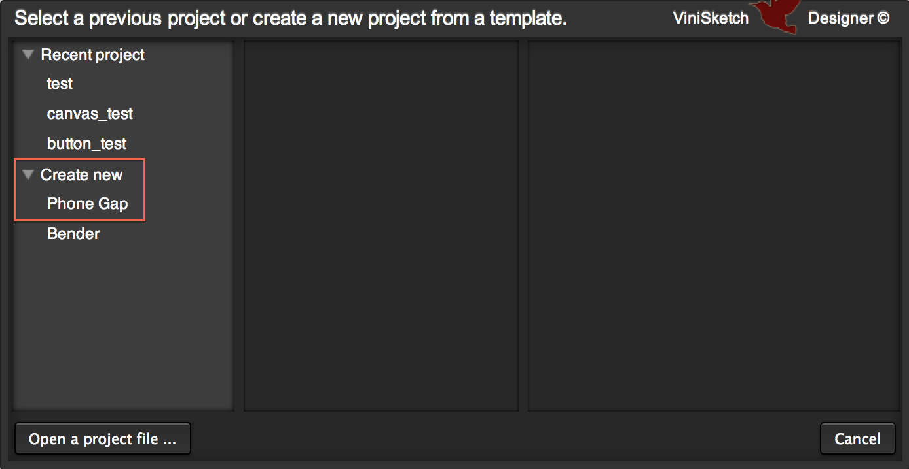

ViniSketch Designer Tutorial
- for Mac
Lineup
Basic VSD
Use PhoneGap
Copyright © 2011, 2012, IGEL Co., Ltd.
ViniSketch Designerをはじめる
インストール
まず、ViniSketch Designer（VSD）をインストールします。
ViniSketch Designer Official SiteにあるDownloadボタンをクリックして、VSDの最新版zipファイルをダウンロードします。 ダウンロードしたzipファイルを任意のフォルダに解凍します。
解凍されたフォルダ内のVSD.appを実行すると、VSDが起動し、スタート画面（プロジェクト選択画面）が表示されます。